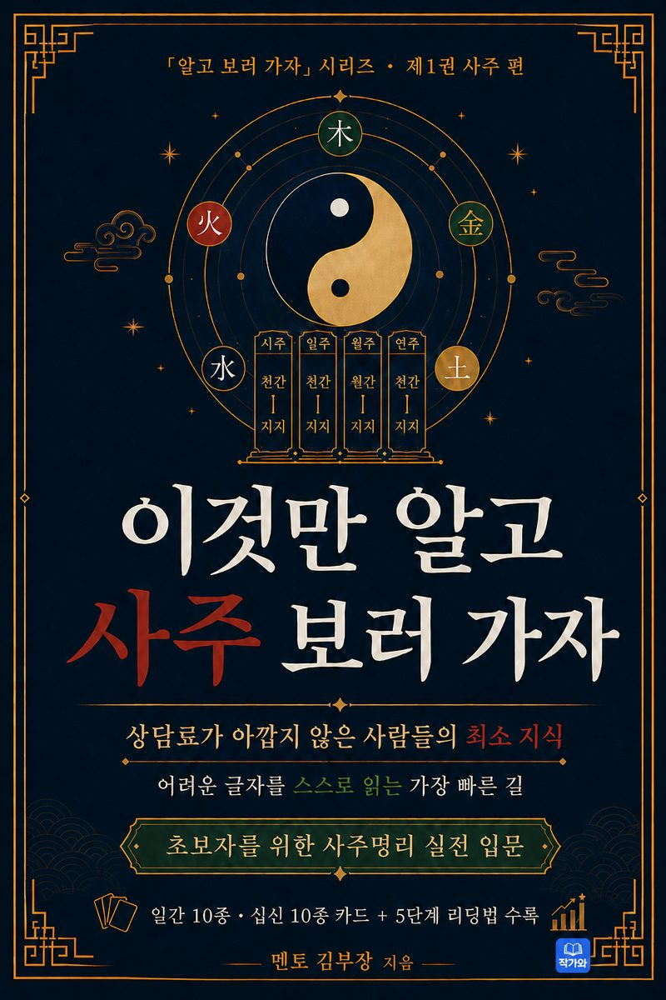

상담료가 아깝지 않은 사람들의 최소 지식. 어려운 글자를 스스로 읽는 가장 빠른 길입니다. 사주팔자 구조부터 일간·십신, 실전 리딩 5단계까지 — 외우기보다 찾아 쓰는, 초보자를 위한 사주명리 실전 입문서입니다.

사주를 처음 보는 사람도, 상담 전에 읽으면 훨씬 이해가 쉬워집니다.
책의 흐름만 잡아도, 상담에서 훨씬 덜 흔들립니다.
사주팔자란 무엇인가 · 음양 · 오행 · 상생과 상극 · 천간 열 글자 · 지지 열두 글자
네 기둥을 세우는 순서 · 절기가 기준이다 · 시주 조견표 · 일간 찾기
오행별 캐릭터 카드 — 갑목·을목, 병화·정화, 무토·기토, 경금·신금, 임수·계수
십신 뽑는 법 — 비겁·식상·재성·관성·인성을 한 장의 카드로 정리
리딩의 전체 지도 · 신강·신약 · 용신 맛보기 · 대운과 세운 · 초보가 자주 하는 실수 일곱 가지
합·충·형·파·해 · 신살 · 대운을 세우고 읽는 법 · 원국과 대운·세운 · 궁위와 육친 · 통합 예제
육십갑자·지장간·용어 사전·리딩 워크시트, 합·충 빠른 표·신살 미니 사전·오행 균형표
상담 체크리스트 · 초보자 FAQ · 십이운성 개념표 — 처음엔 순서만 잡고, 자세한 표는 필요할 때 찾아보세요
외우기보다 찾아 쓰는, 가장 쉬운 사주 입문 — 가장 쉬운 읽는 순서로 따라가세요.
「알고 보러 가자」 시리즈 제1권 사주 편 · 교보문고 · YES24 · 알라딘 · 리디북스 · 북큐브 eBook에서 만나보세요